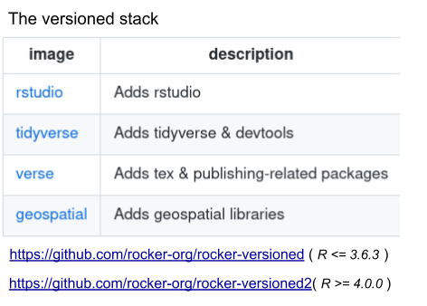

idevillasante$ quarto --help
Usage: quarto
Version: 1.0.36
Description:
Quarto CLI
Options:
-h, --help - Show this help.
-V, --version - Show the version number for this program.
Commands:
render [input] [args...] - Render input file(s) to various document types.
preview [file] [args...] - Render and preview a document or website project.
serve [input] - Serve a Shiny interactive document.
create-project [dir] - Create a project for rendering multiple documents
convert <input> - Convert documents to alternate representations.
pandoc [args...] - Run the version of Pandoc embedded within Quarto.
run [script] [args...] - Run a TypeScript, R, Python, or Lua script.
install <type> [target] - Installs an extension or global dependency.
publish [provider] [path] - Publish a document or project. Available providers include:
check [target] - Verify correct functioning of Quarto installation.
help [command] - Show this help or the help of a sub-command. Motivation
Next generation notebooks
- better integration of code plots and narrative
Portable workspace
platform independent working environment (cluster, local, remote, OS)
Avoid involving it or admins in software installation on remote cluster (HPC)
Community feedback
Good opportunity to share new discoveries about remote work (both remote server & homebased work)
Good opportunity to hear about other approaches
Discussion with the bioinformatics community.
Inspiration for Bioinformatics Unit Workshops
F
A
I

:::
F
A
I
R
We know what is bioinformatics but what is fair
FAIR PRINCIPLES
Findable
Accessible
Interoperable
Reusable
Easy to find for both humans and computers. Globally unique & persistent id.
Open as possible, closed as necessary. User authentication and authorisation.
Can be integrated with other apps & analysis
Documentation and settings, clear license.
“Fair is everybody getting what they need. if you want it fair start by yourself”
So what is Quarto?
Quarto is the next-generation of RMarkdown.
For everyone.
So what is Quarto?
Quarto is a command line interface (CLI) that renders plain text formats (
.qmd,.rmd,.md) OR mixed formats (.ipynb/Jupyter notebook) into static PDF/Word/HTML reports, books, websites, presentations and more
Quarto, more than just knitr
Rmarkdown document processing workflow… . . .

Quarto, more than just knitr
Jupyter notebooks workflow…

Quarto, more than just knitr
Quarto notebooks combine dual engine … Knitr

Quarto, more than just knitr
Quarto notebooks combine dual engine … or jupyter

Quarto, more internals
knitrorjupyterevaluates R/Python/Julia code and returns a.mdfile along with the evaluated code
- Quarto applies Lua filters + CSS/LaTeX which is then evaluated alongside the
.mdfile by Pandoc and converted to a final ouput format
Here is an example of a Lua filter that converts strong emphasis to small caps, from https://pandoc.org/lua-filters.html
return {
{
Strong = function (elem)
return pandoc.SmallCaps(elem.c)
end,
}
}Lua filters written by R/Python/Julia developers should be interchangeable between formats - not language specific!
Comfort of your own workspace


So what is Quarto?
Quarto® is an open-source scientific and technical publishing system built on Pandoc
So what is Quarto?
A Quarto document i.e. a
.qmdis a plain text file, like a.rmd, that can be rendered to many different formats

One install, “Batteries included”
- RMarkdown grew into a large ecosystem, with varying syntax.
Quarto comes “batteries included” straight out of the box
- HTML reports and websites
- PDF reports
- MS Office (Word, Powerpoint)
- Presentations (Powerpoint, Beamer,
revealjs) - Books
- Any language, exact same approach and syntax
What to do with my existing .Rmd or .ipynb?
For some of you - nothing changes! Keep using RMarkdown and Jupyter.
However, most existing .rmd or .ipynb can be rendered as-is via Quarto
quarto render my-favorite.rmd --to htmlSince Jupyter notebooks can either be treated as a linear document to be re-executed or an already evaluated document there are additional options like: --execute
quarto render my-favorite.ipynb --to html --executeQuarto comes out of the box with much better accessibility, better defaults, more options, and a much more consistent syntax.
Rendering
- Render in RStudio

- System shell via
quarto render
quarto render document.qmd # defaults to html
quarto render document.qmd --to pdf
quarto render document.qmd --to docx- R console via
quartoR package
library(quarto)
quarto_render("document.qmd") # defaults to html
quarto_render("document.qmd", output_format = "pdf")Summary of Quarto > RMarkdown
- Easier to organize/structure document and document layout
- Features largely cross-format
- Better ability to integrate multiple languages in a PROJECT
- Evaluate native language (R in knitr, Python/Julia in Jupyter)
- HTML slides with
revealjsare pandoc-compatible, so RStudio Visual Editor works with them
ROCKER-project
+ = https://www.rocker-project.org/
The rocker project provides a collection of containers suited for different needs. find a base image to extend or images with popular software and optimized libraries pre-installed. Get the latest version or a reproducibly fixed environment.

r 
Rocker versioned
Custom rocker image
You can customize your rocker image using a Dockerfile
Just like rocker images build one upon the other
There are helper scripts provided by the rocker team with popular installs
You can add any tools that you can install with command line

Custom Dockerfile
https://github.com/rocker-org/rocker-versioned2.git
FROM rocker/rstudio:4.0.0
...Custom Dockerfile
https://github.com/rocker-org/rocker-versioned2.git
FROM rocker/rstudio:4.0.0
# Add tools
RUN /rocker_scripts/install_rstudio.sh
RUN /rocker_scripts/install_pandoc.sh
RUN /rocker_scripts/install_quarto.sh
RUN /rocker_scripts/install_python.sh
RUN /rocker_scripts/install_shiny_server.sh
...Custom Dockerfile
https://github.com/rocker-org/rocker-versioned2.git
FROM rocker/rstudio:4.0.0
# Custom versions
ENV DEBIAN_FRONTEND noninteractive
ENV S6_VERSION=v2.1.0.2
ENV RSTUDIO_VERSION=latest
ENV DEFAULT_USER=rstudio
ENV PANDOC_VERSION=default
ENV QUARTO_VERSION=default
# Add tools
RUN /rocker_scripts/install_rstudio.sh
RUN /rocker_scripts/install_pandoc.sh
RUN /rocker_scripts/install_quarto.sh
RUN /rocker_scripts/install_python.sh
RUN /rocker_scripts/install_shiny_server.sh
...Custom Dockerfile
https://github.com/rocker-org/rocker-versioned2.git
FROM rocker/rstudio:4.0.0
# Custom versions
ENV DEBIAN_FRONTEND noninteractive
ENV S6_VERSION=v2.1.0.2
ENV RSTUDIO_VERSION=latest
ENV DEFAULT_USER=rstudio
ENV PANDOC_VERSION=default
ENV QUARTO_VERSION=default
# Add tools
RUN /rocker_scripts/install_rstudio.sh
RUN /rocker_scripts/install_pandoc.sh
RUN /rocker_scripts/install_quarto.sh
RUN /rocker_scripts/install_python.sh
RUN /rocker_scripts/install_shiny_server.sh
# Run comands
RUN quarto install extension jmbuhr/quarto-molstar --no-prompt
RUN apt-get update && \
apt-get upgrade -y && \
apt-get install -y \
python3-pip \
build-essential libssl-dev libffi-dev python3-dev \
ssh-client
...Custom Dockerfile
https://github.com/rocker-org/rocker-versioned2.git
FROM rocker/rstudio:4.0.0
# Add metadata labels
LABEL org.opencontainers.image.licenses="GPL-2.0-or-later" \
org.opencontainers.image.source="https://github.com/Izar-de-villasante/dockerfiles" \
org.opencontainers.image.vendor="IJC Bioinformatics Team" \
org.opencontainers.image.authors="Izar de Villasante <idevillasante@carrerasresearch.org>" \
org.opencontainers.image.description="Ready to use rstudio + quarto container to start your new projects. This image contains R(4.2) Python(3.8+) rstudio(v2.1.0.2) shiny Bioconductor and quarto (1.2+)."
# Custom versions
ENV DEBIAN_FRONTEND noninteractive
ENV S6_VERSION=v2.1.0.2
ENV RSTUDIO_VERSION=latest
ENV DEFAULT_USER=rstudio
ENV PANDOC_VERSION=default
ENV QUARTO_VERSION=default
# Add tools
RUN /rocker_scripts/install_rstudio.sh
RUN /rocker_scripts/install_pandoc.sh
RUN /rocker_scripts/install_quarto.sh
RUN /rocker_scripts/install_python.sh
RUN /rocker_scripts/install_shiny_server.sh
# Run comands
RUN quarto install extension jmbuhr/quarto-molstar --no-prompt
RUN apt-get update && \
apt-get upgrade -y && \
apt-get install -y \
python3-pip \
build-essential libssl-dev libffi-dev python3-dev \
ssh-client
...rocker + rstudio
$ docker pull rocker/rstudio
Using default tag: latest
latest: Pulling from rocker/rstudio
54f7e8ac135a: Pull complete
021dd68904f6: Pull complete
8d3e964cf18d: Pull complete
81bbbedbef33: Pull complete
c7878d347b3f: Pull complete
a7aae3dbd958: Pull complete
da950bb11a69: Pull complete
Digest: sha256:b9e6acea945ca28ec14b3de9925372bdd6c5e3828a8575b34d4247f619b66dd5
Status: Downloaded newer image for rocker/rstudio:latest$ docker run -e PASSWORD=SECRET --rm -p 8787:8787 rocker/rstudio
...https://localhost:8787
Rocker versioned
Github
- Repositories: store code
- Registry: store containers
- Actions: CI workflows